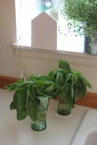
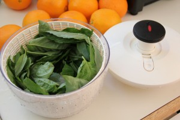
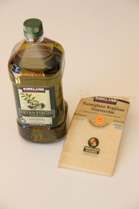
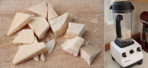
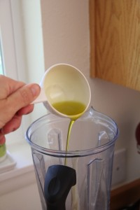
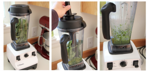
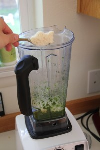
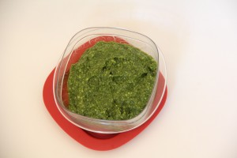

This bunch of basil was sitting on my counter for almost a week and it still looked fresh. This is how I made my pesto today: first, I washed the basil.
Then I selected my ingredients: Extra Virgin olive oil and Parmigiano Reggiano Stravecchio (both available at Costco).
I cut the Parmesan cheese into chunks and used my Vitamix (from Costco as well) to grate it:
I took the cheese out of the Vitamix and I poured in half a cup of extra virgin olive oil (it's better if the oil is poured in first).
Then I added the fresh basil and I blended it to the olive oil.
Finally, I added about three full spoons of freshly grated Parmesan cheese and I blended everything together for a few seconds.
And here it is, ready to be refrigerated or eaten:
Eventually I decided to eat it with some fresh and crunchy bread (dipping style). However, if you decide to refrigerate it, add a very thin veil of extra virgin olive oil on top. Here's the list of ingredients I used:- Three cups of fresh basil leaves;
- Half a cup of extra virgin olive oil;
- Three full tbsp of Parmesan cheese.